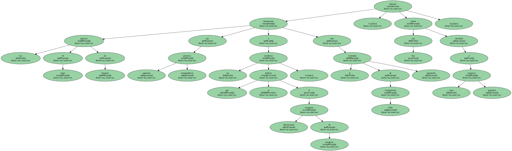
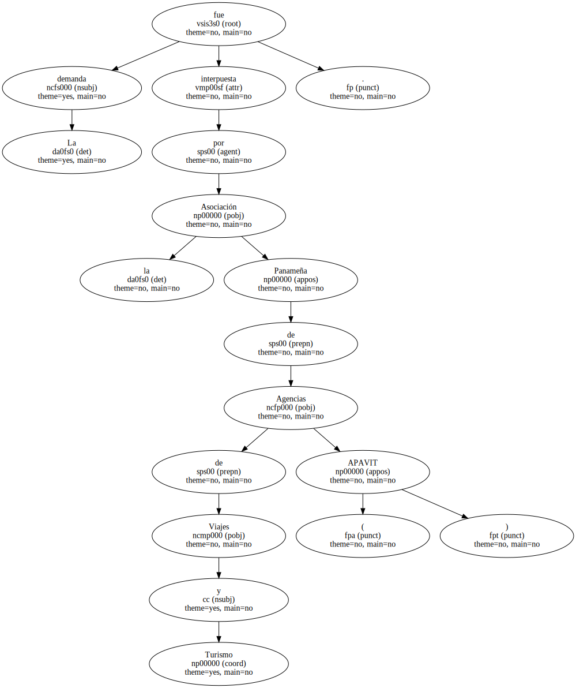
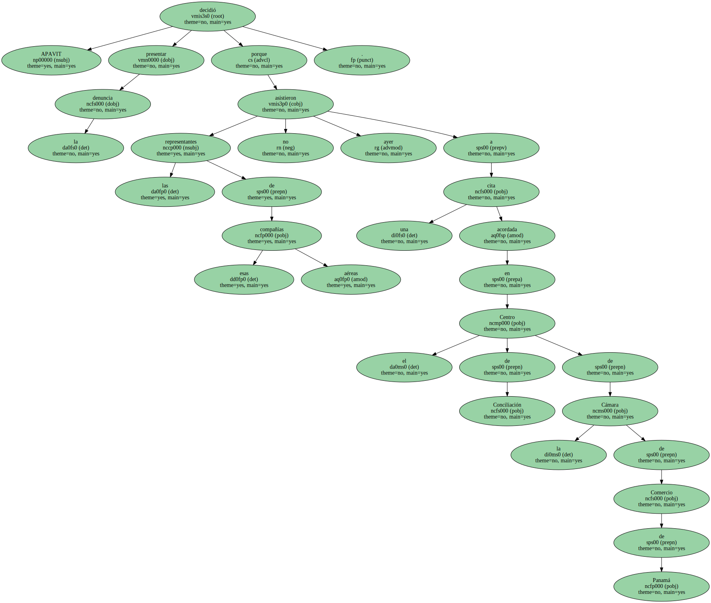
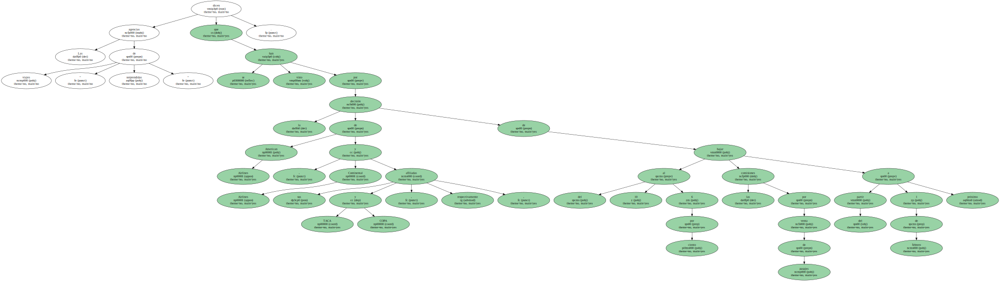
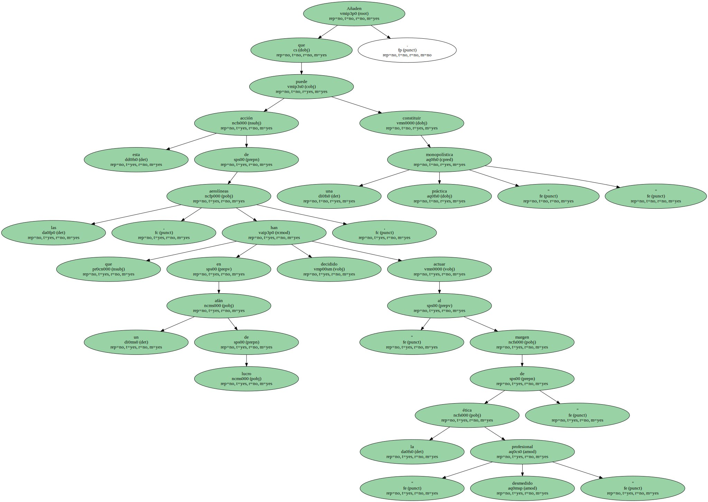
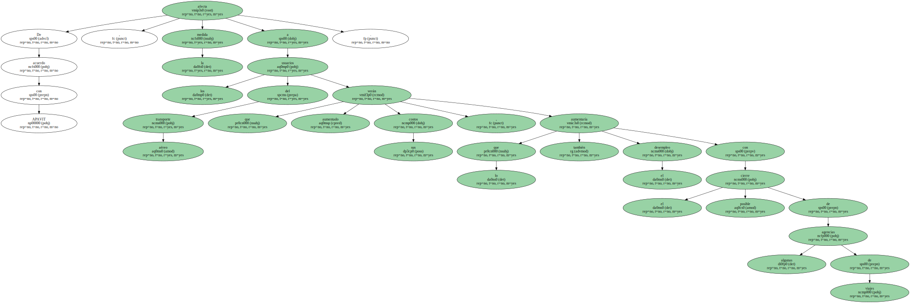
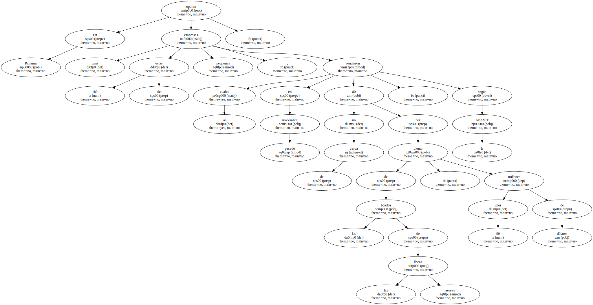
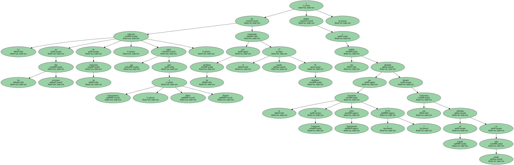
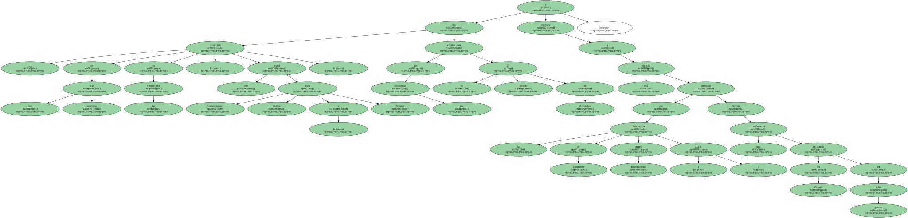
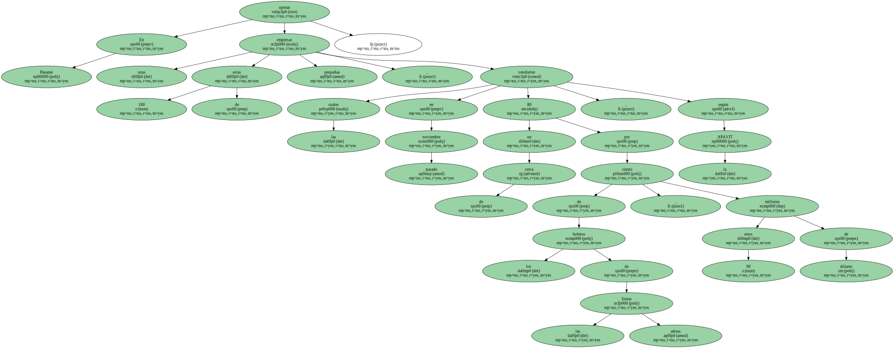

Las agencias de viajes de Panamá denunciaron por supuestas prácticas monopolísticas a las aerolíneas que se dedican al transporte internacional de pasajeros , ante la Comisión de Libre Competencia panameña , informó hoy una fuente vinculada a estas pequeñas empresas.
La demanda fue interpuesta por la Asociación Panameña de Agencias de Viajes y Turismo ( APAVIT ).
Las aerolíneas denunciadas fueron las estadounidenses Delta Airlines , Continental Airlines , American Airlines , la panameña COPA y la salvadoreña TACA.

APAVIT decidió presentar la denuncia porque las representantes de esas compañías aéreas no asistieron ayer a una cita acordada en el Centro de Conciliación de la Cámara de Comercio de Panamá.
Las agencias de viajes dicen que se han visto " sorprendidas " por la decisión de American Airlines , Continental Airlines y sus afiliadas TACA y COPA , respectivamente , de bajar del 10 al 6 por ciento las comisiones por venta de pasajes a partir del 1 de febrero próximo.
Consideran que estas compañías aéreas de manera se han puesto de acuerdo en reducir la comisión , " en un esfuerzo concertado para eliminar las agencias de viajes , la competencia y la libertad de escoger del usuario en los puntos de venta ".

Añaden que esta acción de las aerolíneas , que en un afán " desmedido " de lucro han decidido actuar " al margen de la ética profesional " , puede constituir una práctica " monopolística ".
De acuerdo con APAVIT , la medida afecta a los usuarios del transporte aéreo que verán aumentado sus costos , lo que también aumentaría el desempleo con el posible cierre de algunas agencias de viajes.
De acuerdo con APAVIT , la medida afecta a los usuarios del transporte aéreo que verán aumentado sus costos , lo que también aumentaría el desempleo con el posible cierre de algunas agencias de viajes.
De acuerdo con APAVIT , la medida afecta a los usuarios del transporte aéreo que verán aumentado sus costos , lo que también aumentaría el desempleo con el posible cierre de algunas agencias de viajes.
De acuerdo con APAVIT , la medida afecta a los usuarios del transporte aéreo que verán aumentado sus costos , lo que también aumentaría el desempleo con el posible cierre de algunas agencias de viajes.
En Panamá operan unas 180 de estas pequeñas empresas , las cuales en noviembre pasado vendieron cerca de un 80 por ciento de los boletos de las líneas aéreas , unos 90 millones de dólares , según la APAVIT.
La reducción en los próximos días de las comisiones , que regirá para Centroamérica , Belice y Panamá , fue comunicada por las aerolíneas el pasado 27 de diciembre y obedece a una medida adoptada por la Asociación de Transporte Aéreo Internacional ( IATA ) durante una conferencia celebrada en Canadá en julio pasado.